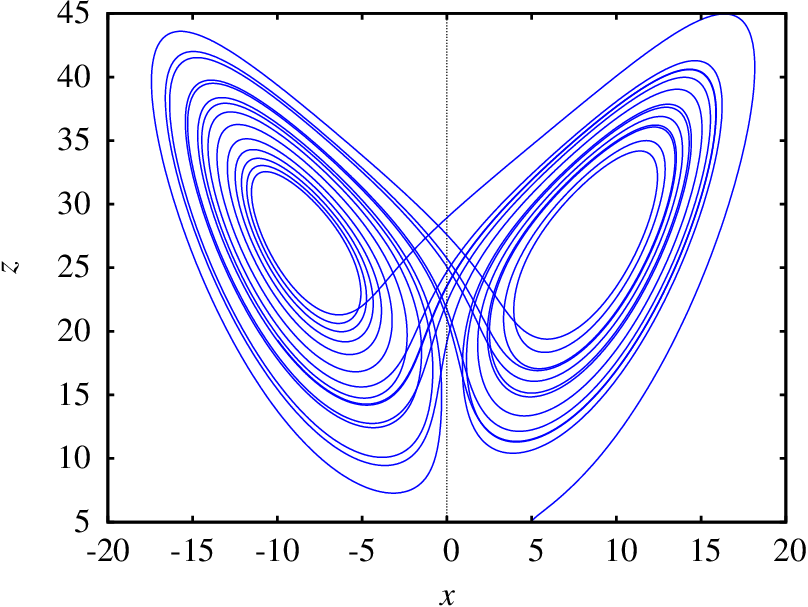

Modelo meteorológico para as correntes de convecção do ar em planos verticais, produzidas por aquecimento na aresta inferior dos planos (Lorenz, 1963).
= amplitude das correntes. = diferença de temperatura entre as correntes ascendente e descendente. = desvio da temperatura normal no plano.
Uma pequena alteração nas condições iniciais produz grandes alterações na evolução do sistema.
Predictability: Does the Flap of a Butterfly's wings in Brazil Set Up a Tornado in Texas?, Lorenz, 1972.